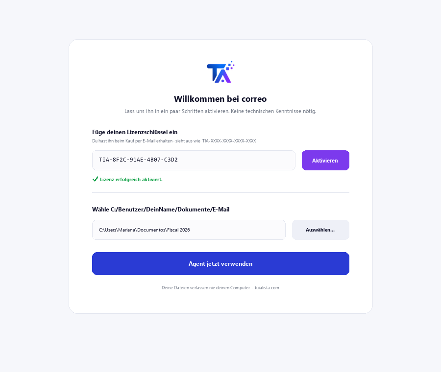
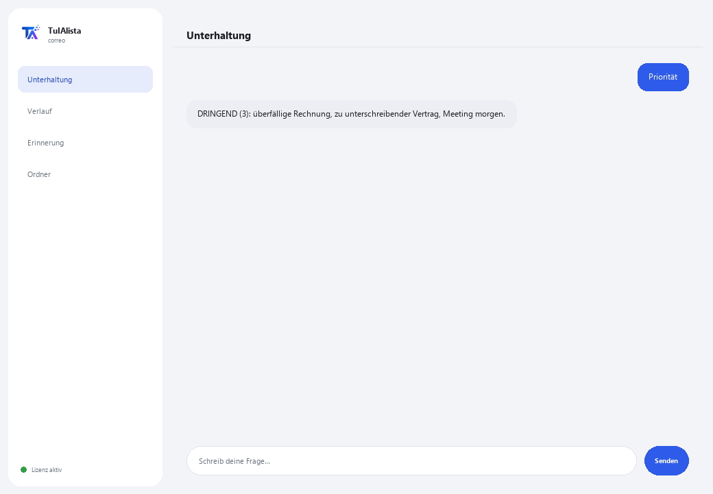

E-Mail-Agent
Ordnet Ihren Posteingang, sagt Ihnen, was dringend ist, und verfasst Antworten für Sie — alles wird auf Ihrem Computer verarbeitet.
Was löst er und was brauchen Sie?
E-Mail ist einer der größten Zeitfresser des Tages: Dutzende von Nachrichten, bei denen sich Dringendes mit Rauschen vermischt. Dieser Agent verwandelt diesen chaotischen Posteingang in eine klare Aktionsliste — priorisiert, mit extrahierten Aufgaben und fertigen Entwürfen.
- Sie brauchen: Ihren Lizenzschlüssel (TIA-XXXX-XXXX-XXXX-XXXX) und den Ordner mit Ihren exportierten E-Mails (.eml, .mbox, .txt oder .csv). Kein Python, keine technischen Kenntnisse.
- Erstes Ergebnis in weniger als 5 Minuten: Sie installieren, aktivieren, wählen Ihren Ordner und führen Priorität aus, um Ihren Posteingang nach Dringlichkeit sortiert zu sehen.
- Ihre E-Mails verlassen nie Ihren Computer — die Analyse läuft lokal.
soporte@tuialista.com oder besuche tuialista.com/soporte — wir antworten normalerweise am selben Werktag.1 Was dieser Agent tut
Sie zeigen ihm den Ordner mit Ihren exportierten E-Mails und er:
- Liest sie alle (.eml, .mbox, .txt und .csv), ohne Verbindung zu E-Mail-Servern.
- Priorisiert jede Nachricht: dringend, wichtig, normal oder niedrig.
- Extrahiert die Aufgaben, um die Sie gebeten werden, von wem und bis wann.
- Erkennt wahrscheinlich unbeantwortete ausstehende Nachrichten.
- Verfasst professionelle Antwortentwürfe in der Sprache der E-Mail.
- Gruppiert nach Absender und sucht in Ihren E-Mails.
- Beantwortet Ihre Fragen zum Posteingang: “was wurde ich diese Woche mit Frist gebeten zu tun?”
Ergebnis: Sie verschwenden keine Zeit mehr im Posteingang und handeln zuerst bei dem, was wirklich wichtig ist.
2 Installation (2 Minuten)
Für Windows. Keine dauerhafte Internetverbindung nötig, nichts wird in die Cloud hochgeladen.
Laden Sie das Installationsprogramm von tuialista.com/descargar herunter (E-Mail-Agent) und öffnen Sie es. Es erstellt eine Verknüpfung mit dem Logo auf Ihrem Desktop — kein Python oder Terminal erforderlich.
Doppelklicken Sie auf das neue Symbol. Fügen Sie Ihren Lizenzschlüssel ein (er wurde Ihnen beim Kauf per E-Mail zugesandt) und klicken Sie auf Aktivieren. Sie sehen ein grünes Häkchen, wenn er gültig ist.
Wählen Sie den Ordner mit Ihren exportierten E-Mails aus und klicken Sie auf Agent jetzt verwenden. Beim nächsten Mal startet er direkt — er merkt sich Ihren Schlüssel und Ihren Ordner.

3 So verwenden Sie ihn
Der Agent öffnet ein Chat-Fenster, wie eine Messaging-App — kein schwarzer Programmierer-Bildschirm. Sie schreiben Ihren Befehl oder Ihre Frage in das Textfeld unten, klicken auf Senden (oder Enter), und die Antwort erscheint als Nachricht, genau wie auf diesem echten Bild:

Die folgenden Befehle sind die Wörter, die Sie in dasselbe Textfeld eingeben können:
> PrioritätIhr Posteingang nach Dringlichkeit sortiert: DRINGEND, WICHTIG, NORMAL, NIEDRIG. Markiert diejenigen mit Frist.
> ZusammenfassungManagement-Übersicht des Posteingangs: wie viele dringend/wichtig, häufigste Absender und was zuerst zu erledigen ist.
> AufgabenE-Mails, die eine Aktion verlangen, mit wem sie verlangt, der Priorität und der genannten Frist, falls vorhanden.
> antworten <Betreff>Antwortentwurf für die von Ihnen angegebene E-Mail (nach Betreff oder Nummer), in der Sprache des Originals, mit Platzhaltern [IN ECKIGEN KLAMMERN] zum Ausfüllen.
> ausstehendE-Mails, die eine Aktion verlangen und deren Absender nicht als Empfänger einer anderen Ihrer E-Mails erscheint — möglicherweise unbeantwortet.
> AbsenderGruppiert Ihre E-Mails nach Absender, sortiert nach Volumen.
> suchen <Text>Sucht ein Wort oder eine Phrase in Betreff und Text. Z. B.: suchen rechnung maerz.
> freie Frage?Schreiben Sie jede Frage in natürlicher Sprache, z. B.: welche dringenden E-Mails habe ich diese Woche?
> beendenBeendet die Sitzung (funktioniert auch mit exit).
4 Beispiele für häufige Anwendungen
Den Tag mit dem Dringenden beginnen
Priorität — Sie sehen zuerst das DRINGENDE und das mit Frist.
Nicht vergessen, was man Sie gebeten hat
Aufgaben
Schnell und gut antworten
antworten projektvorschlag — Sie erhalten einen professionellen Entwurf, bereit zum Überprüfen und Senden.
Erkennen, was unbeantwortet blieb
ausstehend
5 Häufig gestellte Fragen
Werden meine E-Mails ins Internet hochgeladen?
Verbindet er sich mit meinem Gmail-/Outlook-Konto?
Brauche ich Internet, um ihn zu verwenden?
Wie entscheidet er die Priorität?
In welcher Sprache verfasst er die Antworten?
Wie erkennt er “unbeantwortete ausstehende Nachrichten”?
Kann ich den E-Mail-Ordner ändern?
Liest er Anhänge (PDF, Word)?
Verändert oder versendet er E-Mails?
Speichert er einen Verlauf zwischen Sitzungen?
6 Problemlösung
Zeigt “0 E-Mails”
Ein .csv wird nicht richtig gelesen
Zeigt “Lizenz ungültig” oder fordert erneute Verbindung
“Keine KI-Anbieter konfiguriert”
Keine dieser Lösungen hat Ihr Problem behoben? Schreiben Sie uns direkt — wir schauen es uns gerne gemeinsam mit Ihnen an.
soporte@tuialista.com oder besuche tuialista.com/soporte — wir antworten normalerweise am selben Werktag.7 Datenschutz und Vertraulichkeit
Ihre E-Mails verlassen nie Ihren Computer.
- Der Agent liest und verarbeitet die Dateien lokal, auf Ihrem eigenen Gerät. Er verbindet sich nicht mit Ihrem E-Mail-Server und lädt Ihre E-Mails nirgendwohin hoch.
- Die Priorisierung, die Aufgabenerkennung und die Gruppierung nach Absender erfolgen auf Ihrem Gerät.
- Das Einzige, was über das Internet läuft, ist: (1) eine Überprüfung, dass Ihre Lizenz aktiv ist — die den Inhalt Ihrer E-Mails nicht enthält —, und (2) bei einer Anfrage nach Zusammenfassung, Entwurf oder Frage wird ein Ausschnitt der relevanten E-Mails an die KI-Engine gesendet, um die Antwort zu verfassen.